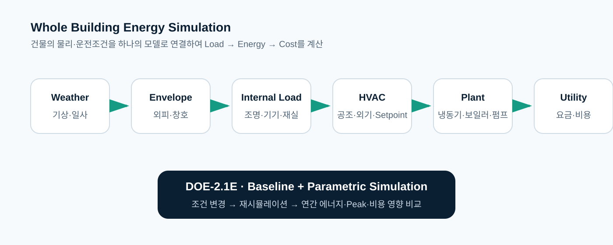
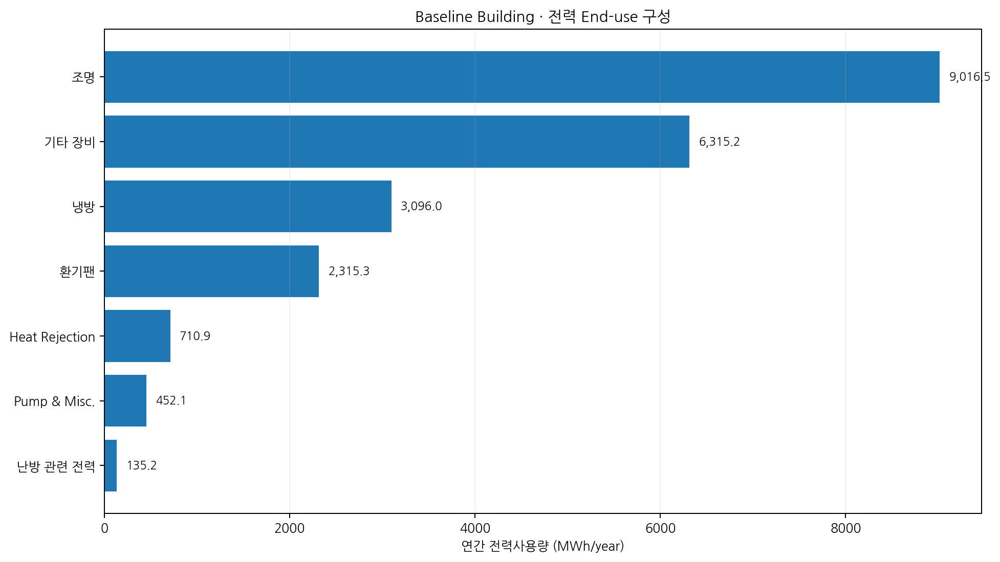
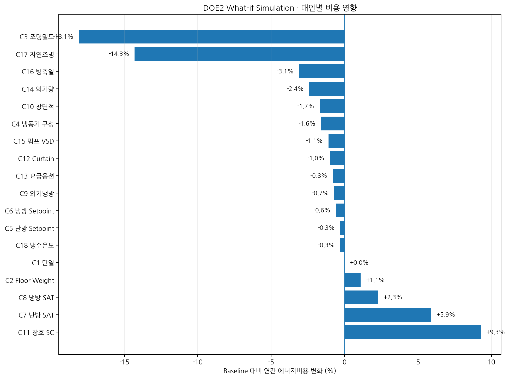

CASE 43 · DEEP DIVE · WHOLE BUILDING ENERGY SIMULATION
DOE2 기반 건물 에너지 시뮬레이션과 절감대안 분석
대형 복합건물의 Baseline Building Model을 구축하고 외피·조명·창호·공조·Plant·제어조건을 하나씩 변경하여 연간 에너지와 비용에 미치는 영향을 사전에 비교한 Parametric Simulation 사례입니다.
설치하기 전에 컴퓨터에서 먼저 검증합니다.
건물 에너지는 외피, 일사, 조명, 내부발열, 외기량, 설정온도, 공조기, 냉동기, 펌프와 운전스케줄이 서로 영향을 주며 결정됩니다. 본 사례는 개별 설비의 단순 절감량 합산이 아니라 건물 전체의 상호작용을 계산하는 Whole Building Simulation을 적용했습니다.

대형 초고층 복합건물을 Baseline으로 모델링
원 보고서의 대상은 서울 상암 DMC 지역에 계획된 지하 9층·지상 133층, 높이 약 640m, 연면적 약 724,675㎡의 복합시설입니다. 업무·판매·주거·호텔·전망대 등 용도별 특성을 반영해 DOE-2.1E 모델을 구성했습니다.
방위, 벽체·단열, 창호, 창면적, 유리 및 공간구성
조명, 인체, 기기발열, 재실 및 시간대별 운전스케줄
공급공기온도, 외기량, 냉동기·펌프·열원 및 에너지요금
연간 총량보다 End-use 구조가 중요합니다.
CASE 0의 BEPS 결과에서 연간 전력사용량은 22,041.1MWh, 천연가스는 2,673.4MWh 상당, 총 Site Energy는 24,714.5MWh로 계산되었습니다. DOE2는 이를 조명·기기·냉방·팬·펌프 등으로 분해합니다.

하나의 조건을 바꾸고 건물 전체의 반응을 다시 계산
Baseline 이후 단열, 조명밀도, 냉동기 구성, 냉난방 Setpoint, 공급공기온도, Economizer, 창면적·SC, 외기량, 펌프 VSD, 빙축열, 자연조명 등 다양한 What-if 조건을 비교했습니다.

절감효과가 컸던 대안과 예상 밖 결과
| 대안 | 변경조건 | 연간 비용 변화 | 실무 해석 |
|---|---|---|---|
| 조명밀도 | 30 → 10 W/㎡ | -18.1% | 조명전력과 내부발열 감소가 냉방부하에도 영향 |
| 자연조명 제어 | Daylighting Control | -14.3% | 건축적 채광과 조명제어의 통합효과 |
| 빙축열 | Ice Storage | -3.1% | 에너지뿐 아니라 Peak와 시간대별 요금의 Load Shifting 관점 필요 |
| 창호 SC | 0.33 → 0.75 | +9.3% | 일사유입 증가에 따른 냉방부하 영향 |
| 난방 공급공기온도 | 29 → 25℃ | +5.9% | 단일 Setpoint 변경이 전체 시스템에서는 비용 증가로 연결 |
개별 설비 효율보다 시스템 상호작용을 봅니다.
창호 Solar Gain 변화 → Zone Load 변화 → AHU·Plant 부하 변화
Envelope ↔ Internal Load ↔ HVAC ↔ Plant ↔ Control
실측데이터 Baseline과 물리모델 Baseline은 서로 보완적입니다.
OLS·HDD와 같은 Data-driven Baseline은 실제 계측데이터에서 영향변수와 에너지의 관계를 찾습니다. 반면 DOE2는 Weather·Geometry·Envelope·Schedule·HVAC·Plant를 물리적으로 모델링합니다. 신축 설계단계에는 실측데이터가 없으므로 Physics-based Simulation이 특히 중요하며, 운영단계에서는 BEMS/EMS 데이터와 결합해 M&V와 최적화로 확장할 수 있습니다.
실측 Energy + 영향변수 → OLS/HDD/AI → 예상사용량
Weather + Building + HVAC → DOE2/Energy Model → 예상사용량
설계 Simulation → Commissioning → BEMS → M&V → Continuous Optimization
과거 DOE-2.1E 프로젝트에서 배우는 현재의 Energy Modeling
본 프로젝트는 DOE-2.1E로 수행된 실제 과거 분석사례입니다. 현재는 EnergyPlus 등 발전된 도구를 사용할 수 있지만, Baseline Building을 구축하고 하나의 조건을 변경한 뒤 동일 조건에서 재시뮬레이션하여 대안을 비교하는 기본 방법론은 여전히 유효합니다.
적용 분석기술
Simulation은 미래의 에너지 소비를 미리 경험하는 방법입니다.
설치 전에 에너지·Peak·비용 영향을 비교하여 개선대안의 우선순위를 정합니다.